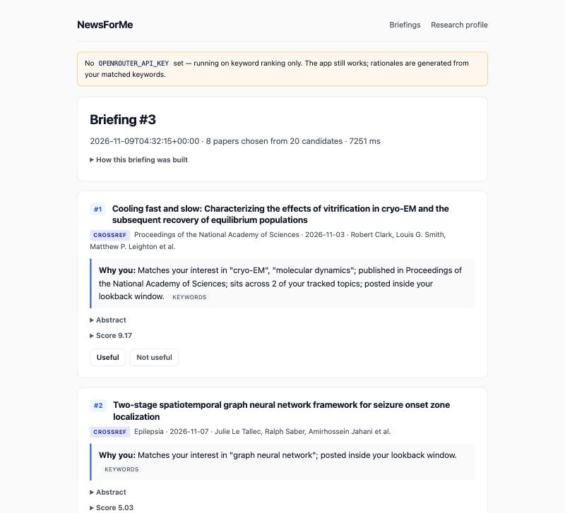
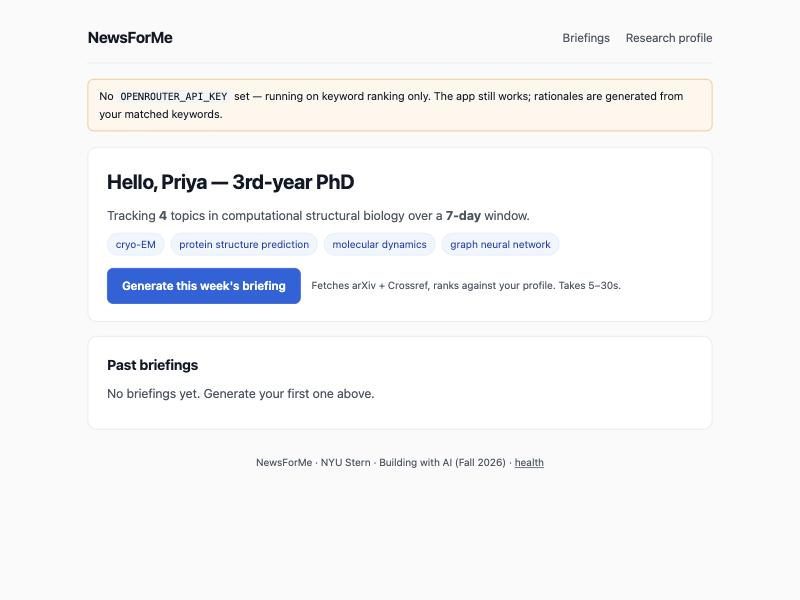

A weekly research briefing for PhD candidates: it reads the week’s new papers across arXiv and the journals, keeps the handful that actually touch your dissertation, and tells you in one line why each one is yours.
Current status: Build 1 — working local prototype
(FastAPI + SQLite, runs at http://localhost:8000).
Cloud URL: not yet; the app stays local through Week 4 and
gets deployed in Build 5.

A real briefing generated on 9 Nov 2026 for a test profile in computational structural biology. 8 papers kept from 20 candidates in 7.3 seconds. Every paper carries a “Why you” line and an expandable score breakdown.

The home screen. Tracked topics drive everything; one button runs the whole workflow. The orange banner is honest about running without a model key.
Who is this for? PhD candidates who are responsible for knowing what was published in their field this week — the ones whose advisor opens a meeting with “did you see the new paper?” To fill in: name the 2–3 specific PhD students you will hand this to, and how you reach them.
The painful “Before” workflow: Google Scholar alerts, a few journal table-of-contents emails and an arXiv feed all land in one inbox. They are keyword alerts, so they fire on any paper containing the word, and the student skims dozens of titles to find the two that matter. Most weeks the triage gets skipped, and the paper surfaces later in a meeting instead.
The “After” workflow: Open NewsForMe, click once, and get a ranked briefing of up to eight papers from the chosen window. Each entry says which of your tracked topics it hit, where it was published, and why you specifically should read it. Mark papers useful or not useful to tune future briefings. Target: under ten minutes, once a week.
Riskiest assumption: that keyword overlap is a good enough proxy for “this paper is relevant to my dissertation.” Build 1 says it is not. A structural-biology profile tracking graph neural network was shown GNN papers about traffic forecasting, seizure localisation and aerodynamics. They match the phrase exactly and are useless to that researcher. Literal matching cannot see field context. This is the single thing that decides whether the product works, and it is what the model-review layer exists to fix.
Architecture: research profile (SQLite) → FastAPI backend → arXiv Atom API + Crossref REST API (both free, no key) → de-duplication by DOI and title → deterministic keyword / venue / recency scoring → optional OpenRouter model pass that re-ranks the shortlist, drops false matches and writes the “Why you” line → briefing saved to SQLite and rendered server-side.
Deliberate design decision: the model layer is optional, not load-bearing. If there is no API key, the call fails, or the model returns unparseable output, the app keeps the deterministic ranking and the keyword-derived explanations. A briefing is never blocked on a model. Every screenshot above was produced with no model key at all.
Planned change — rebuilding the stack on Lovable. I want to move the tech stack to Lovable rather than keep hand-rolling the FastAPI + Jinja front end. A prototype is already running at newsforme.fyi.
| Problem | Fix |
|---|---|
| Crossref returned papers dated 2029, from low-quality journals, because sorting by publication date floats future-dated records to the top. | Added an explicit until-pub-date of today, switched
to relevance sorting, and reject future dates in code as well. |
| The same eLife paper appeared twice. De-duplication keyed on DOI alone, and eLife mints a separate DOI per version. | De-duplicate on DOI and normalised title; the published version now wins over the preprint. |
| A paper matching none of the tracked topics appeared in a briefing, carried in on its recency score alone. | Require at least one keyword match. Venue and recency are boosts on top of relevance, never a substitute for it. Caught by a test. |
| “Journal of Al-Farabi for Engineering Sciences” was given the prestige of Science, because venue matching was a naive substring test. | Whole-word prefix matching. Real families like Nature Methods still match; coincidental words no longer do. |
| A briefing took 77.6 seconds — unusable. | Crossref keyword queries now run concurrently and arXiv retries were cut back. Same briefing now takes 7.3 seconds. |
export.arxiv.org answers HTTP 429 to
any quoted phrase query from this machine, so arXiv contributed
nothing to the demo briefings. |
Rewrote the query to be category-only and quote-free, and did the keyword matching locally instead. Still 429 here, so the run degrades to Crossref and records the failure in the briefing trace rather than hiding it. Open issue, first job in Build 2. |
AGENTS.md) mattered — it turned a loop into a diagnosis,
which is what produced the category-only query redesign.